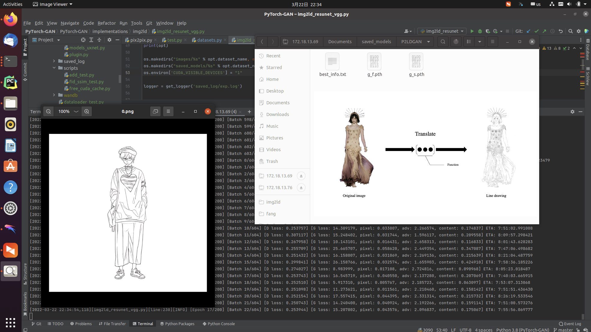
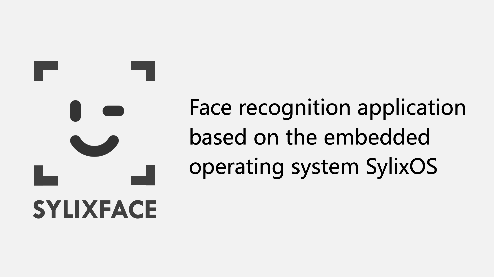
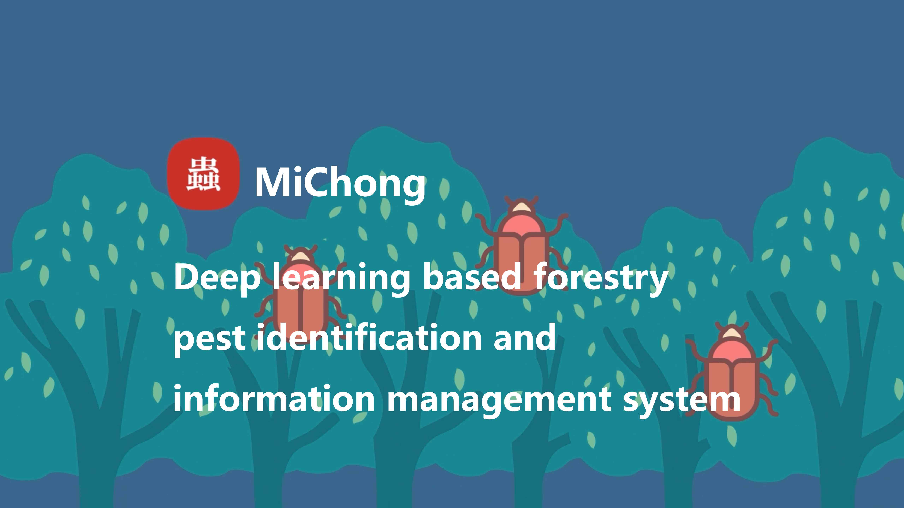
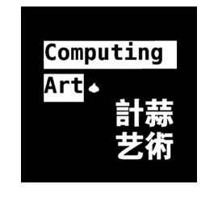

Joint Geometric-Semantic Driven Character Line Drawing Generation
Cheng-Yu Fang, Xian-Feng Han*, ICMR 2023
Hello, it's a pleasure to have you visit my personal homepage 👋! I am Cheng-Yu Fang, a "research-art" creator who enjoys merging technology and art, as well as a technology enthusiast who enjoys participating in competitions and engaging in cutting-edge research.
I am a third-year undergraduate student currently pursuing a degree in software engineering at the College of Computer and Information Science & College of Software, Southwest University. In addition, I am involved in research on image processing and image translation with Associate Professor Xian-Feng Han at the Computer Vision and Cross-Media Laboratory(CVCM Lab).
My Email: fangchengyuswu@163.com
Cheng-Yu Fang, Xian-Feng Han*, ICMR 2023
Wish me luck.🙏

2021 | My open source project, 284 Star harvested.
Semi-automated image annotation using the YOLOv5 model.[Github]

2021 | 🌟National Training Program of Innovation and Entrepreneurship for Undergraduates.(No.202210635013)[Program Page]

Now | Developed with GKD Robotics Innovation Laboratory.
My team and I have completed the development of mechanical, electrical and vision algorithms for a variety of robots for the Robomaster robotics competition.[video]

2022 | Developed with the Computing Art team.
Face recognition, user information management, multi-machine network synchronisation, hot updates, anti-counterfeit verification and anti-confrontation are implemented. [video]
2022 | Developed with the Computing Art team.
Porting the Glasgow Haskell Compiler(Based on LLVM Backend) to the LoongArch platform and optimising it.[video]

2021 | Developed with the Computing Art team.
A platform-wide forestry pest identification and information query information management is achieved.[video]
 Southwest University(SWU), China | Sept 2020 - Jun 2024 (Expected)
Southwest University(SWU), China | Sept 2020 - Jun 2024 (Expected)
College of Computer and Information Science & College of Software
B.S.E. in Software Engineering
Deakin University(DKU), Australia | Aug 2021 - Aug 2021 (One Week)
School of Information Technology
Online Visiting Student (Unable to travel to campus due to COVID19 outbreak😢)
 SWU Principles of Interactive Media Course | Mar 2023 - Jun 2023
SWU Principles of Interactive Media Course | Mar 2023 - Jun 2023
Role: Teaching Assistant
Advisor: Xian-Feng Han@SWU
 SWU Computer Vision and Cross-Media Laboratory(CVCM Lab) | Oct 2021 - Today
SWU Computer Vision and Cross-Media Laboratory(CVCM Lab) | Oct 2021 - Today
Role: Subject members
Advisor: Xian-Feng Han@SWU
SWU GKD Robotics Innovation Laboratory | Oct 2021 - Today
Role: Team leader(2022-2023) | Members of the Algorithm Group(2021-2022)
Advisor: Zi-Chuan Fan@SWU

Role: Team leader
Advisor: Jun Zhou@SWU

Computational Arts Development Team, Xin-Ke Zhang(left), Run-Ze Lin(middle) and myself(right) in Nanjing.

A group photo of some members of the GKD Robotics Innovation Team taken in the lab at Westa College.
Something interesting written in my spare time.🥱

Hold out an open hand at a distance from the webcam and the light will follow the movement of your hand.[based on this]

The flow of the lines will change according to the melodic rhythm of the music.[based on this]
{kind=link}
{kind=link}
{kind=link}
{kind=link}
{kind=link}